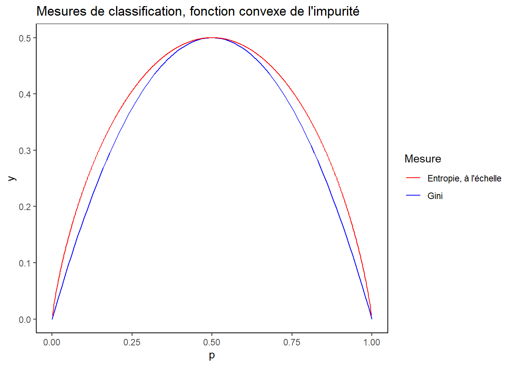
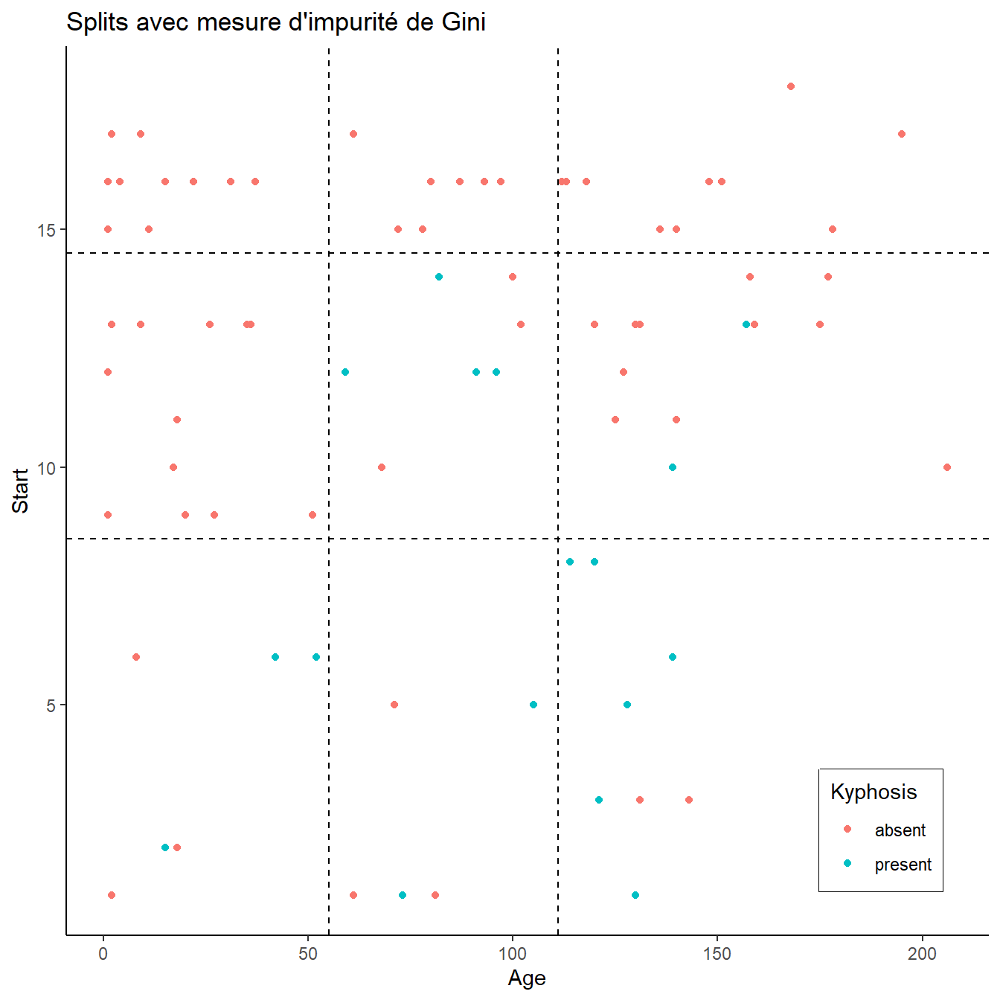
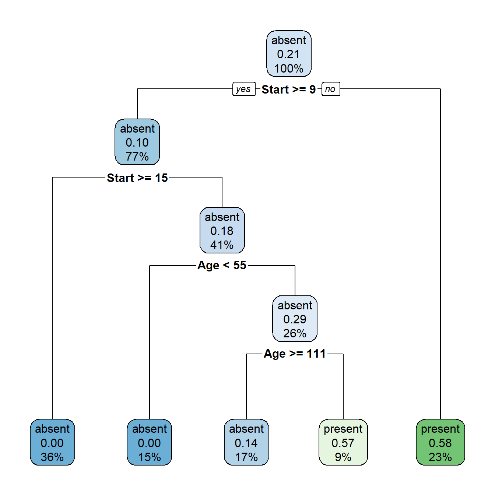
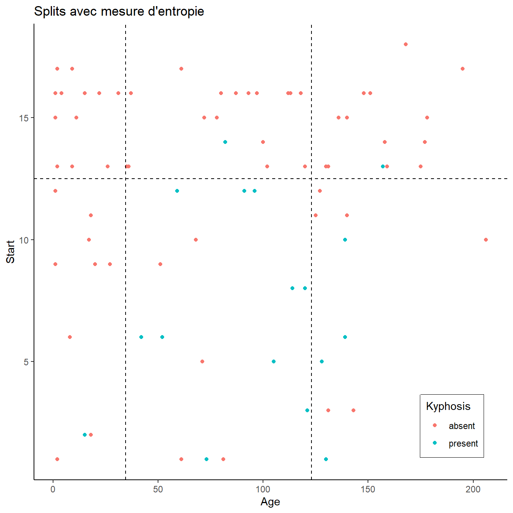
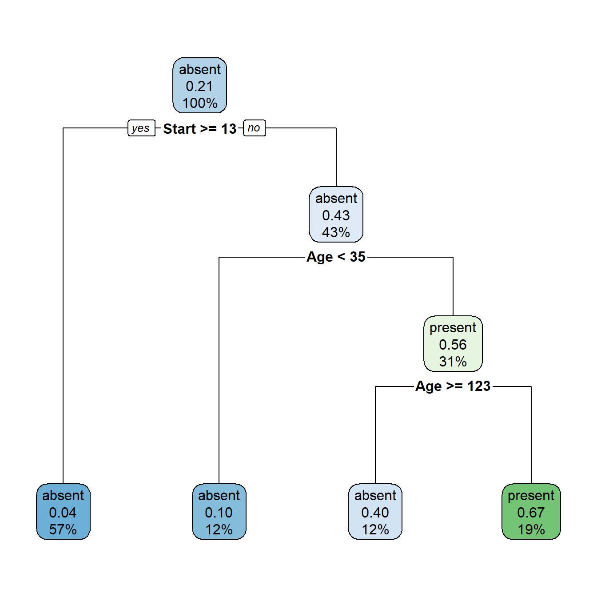
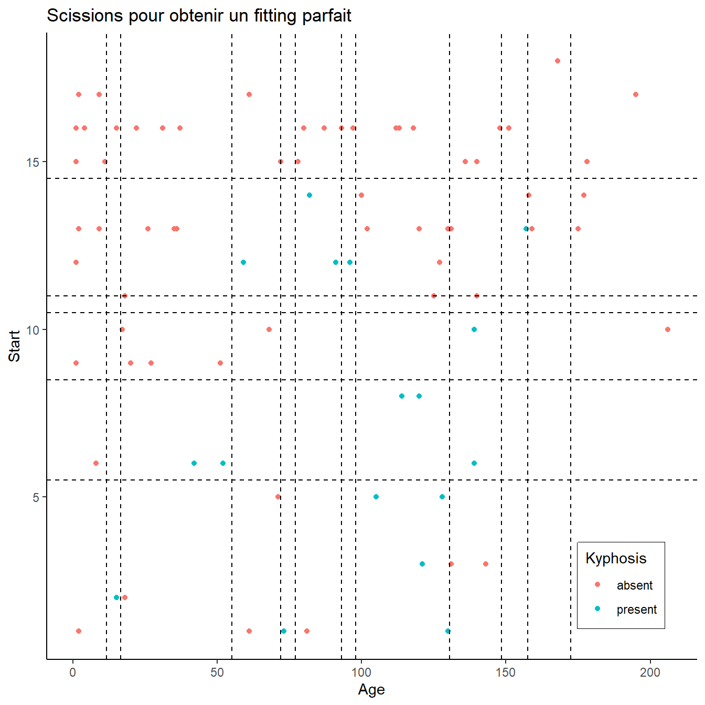
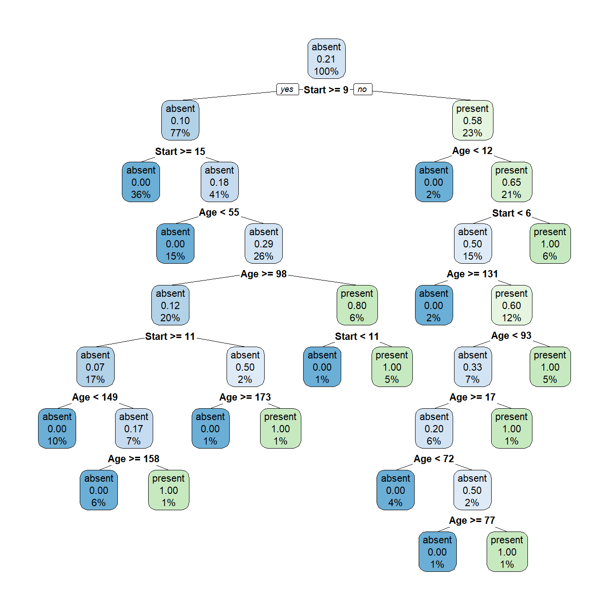

2 Terminologie
Les arbres de régression permettent de classifier les données en groupes homogènes. Cette classification permet d’associer la valeur la plus vraisemblable à ces groupes. Cette classification se fait via une suite de segmentations binaires.
Dans la terminologie de la théorie des arbres, un arbre est un ensemble de branches qui se terminent chacune par une feuille.
Les branches sont obtenues par une segmentation qui est organisée de manière séquentielle. Pour chaque scission d’arbre possible, on obtient une mesure d’erreur globale qui servira d’indicateur à la scission ou pas. La mesure d’erreur globale est la somme des erreurs de chaque feuille - le point terminal de chaque branche de l’arbre-. Le point de départ est le modèle sans séparation.
2.1 Arbres de régression
Pour des prédictions continues, on parlera d’arbres de régression.
Pour une valeur de prédiction \(\hat{y_i}\), on peut la comparer avec la valeur observée \(y_i\). Lorsqu’on essaye de minimiser via les moindres carrés, l’objectif de minimisation est \(\sum_i{(y_i - \hat{y_i})^2}\).
L’objectif de l’arbre tend à diminuer cette mesure de l’erreur en séparant les observations en deux régions, via une des caractéristiques de l’ensemble.
La mesure d’erreur devient alors la somme des erreurs sur chacune des régions \(R_{i}\), la prédiction étant dépendante de la région d’observation:
\(\sum_{j=1}^{J}\sum_{i \in R_j}{(y_i - \hat{y_i})^2}\).
La valeur frontière qui va déterminer à quel endroit la séparation a lieu est l’endroit qui minimise l’erreur de prédiction.
2.2 Arbres de classification
Pour une réponse de type catégorielle, l’arbre est appelée arbre de classification. Les feuilles - les points terminaux de l’arbre- donnent alors la proportion de chacune des différentes modalités de la variable réponse dans celles-ci.
La proportion \(p_{mk}\) de la modalité \(k\) dans la feuille est le nombre de \(x_{i}\) divisé par la population présente dans la feuille.
Comment l’arbre grandit? L’arbre développe des branches tant que l’erreur globale est minimisée. Cette erreur globale se mesure avec des mesures d’impurité. L’algorithme de préférence utilisé en R vient du package rpart. Celui-ci utilise deux mesures d’impurité :
- La mesure d’impureté de Gini
- L’entropie
L’indice de Gini est défini par : \(\sum_{k = 1}^K \hat{p}_{mk} (1-\hat{p}_{mk})\). Intuitivement cet indice est la probabilité d’assigner la mauvaise classe à une observation tirée au hasard en utilisant les proportions présentes dans la feuille. Dans un exemple à deux classes, \(X\) et \(Y\) avec de sproportions \(p_X\) et \(p_Y\) de 0.9 et 0.1 respectivement, les probabilités d’assignement dont donnés par le tableau suivant, qui représente les probabilités conditionnelles d’assignement étant donné leur vraie valeur.
Table 2.1. An Example of Including Tables using Latex in an R markdown Document
\[ \begin{matrix} \begin{array}{c|c\c} \hline \text{} & \text{X} & \text{Y} \\\hline \textbf{X} & 0.81 & 0.09 \\\hline \textbf{Y} & 0.09 & 0.01 \\\hline \end{array} \end{matrix} \]
Cet indice aura tendance à créer
L’entropie est définie par \(-\sum_{k=1}^K \hat{p}_{mk}\log{p_{mk}}\). Tout comme l’indice de Gini c’est une mesure de l’impurité au sein d’une feuille. Pour des faibles valeurs de \(p_{mk}\) l’entropie va baisser.
Ces deux mesures sont toutes les deux convexes, et prennent leur maximum lorsque qu’il n’y a pas de différence entre les proportions des deux populations : les groupes les plus hétérogènes seront pénalisés et vont pousser l’arbre à scinder le groupe en deux groupes plus homogènes.
ggplot() +
stat_function(fun = function(x) 2 * x * (1-x), aes(color = "Gini")) +
stat_function(fun = function(x) (- x * log(x) -
(1-x) * log(1-x)) / -log(0.5) * 0.5,
n = 1000,
aes(color = "Entropie, à l'échelle")) +
theme_classic() +
theme(panel.border = element_rect(colour = "black", fill = NA)) +
ggplot2::scale_color_manual("Mesure", values = c("red", "blue")) +
labs(x = "p") +
ggtitle("Mesures de classification, fonction convexe de l'impurité")## Warning: Removed 2 row(s) containing missing values (geom_path).


Cet indice va mesurer quelle est l’erreur de prédiction moyenne.
Pour déterminer comment le split est obtenu, la minimisation / maximisation de l’indice de Gini est observée.
Pour un split via une variable continue, le split entre \(K_split\) est fait en calculant l’indice de Gini défini par \[X\] à chaque point possible.
Si on utilsie la proportion de la classe \(p_{mk}\) la plus élevée pour la prédiction, l’erreur attendue est \(1 - max(p_{mk})\)
En parcourant toutes les combinaisons possibles
2.3 Elagage de l’arbre
Une fois que la base est couverte, il reste à analyser ce qui limite la taille de l’arbre. En effet, à chaque scission l’erreur globale sur la base d’entraînement diminue, si aucune contrainte n’est appliquée, l’arbre va grandir jusqu’à couvrir parfaitement toutes les observations. Cette sur-paramétrisation est à éviter, car on verra qu’elle n’améliore pas le pouvoir de prédiction de l’arbre.
2.3.1 Exemple
Dans l’exemple de kyphosis, il est possible de séparer l’espace de \(Y\) pour couvrir toutes les zones possibles de réponse, jusqu’à obtenir des feuilles qui contiennent la même modalité pour la variable de réponse. Les différentes mesures d’impurité (Gini ou entropie) sont alors minimales.
